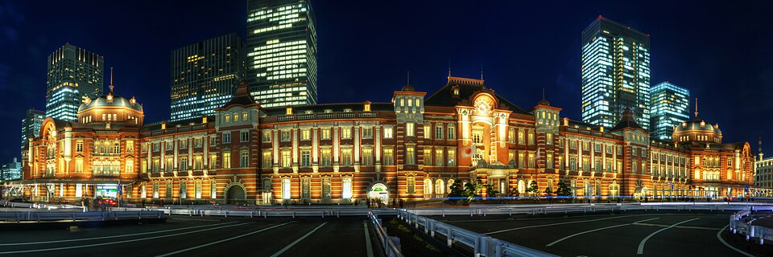
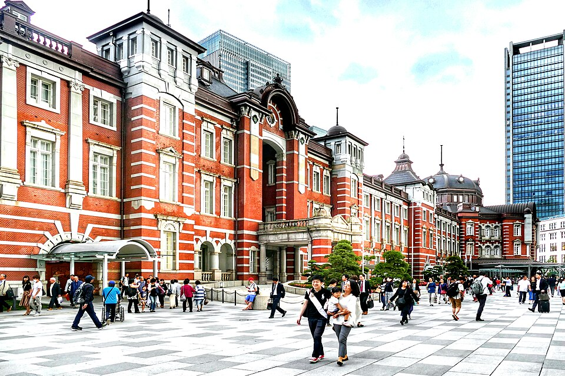
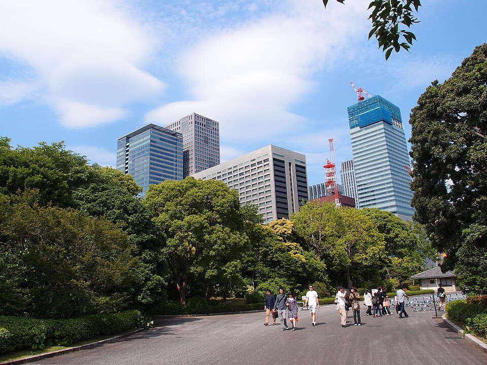

Вариант B: Imperial Palace + Marunouchi → Senso-ji
Восточный сад дворца (East Gardens) сегодня закрыт: по правилу Управления двора, если понедельник праздник и сад открыт, во вторник он закрыт (памфлет Imperial Household Agency, Kunaicho). Снаружи всё открыто: площадь, мост Nijubashi, ворота, рвы. Сам сад открыт в ср 14.10 и чт 15.10, 9:00-16:30, вход до 16:00.
Отель → Tokyo Station
JR Akihabara, голубая Keihin-Tohoku (на Ofuna, платформа 4) или зелёная Yamanote (на Tokyo / Shinagawa, платформа 3), 2 остановки: Kanda, Tokyo. Выход Marunouchi Central (丸の内中央口).
Tokyo Station и аллея Gyoko-dori
Вокзал открыт в 1914 году, фасад Marunouchi из красного кирпича - один из символов Tokyo. Прямо от центрального выхода к дворцу ведёт широкая аллея Gyoko-dori с деревьями.

.jpg){kind=link}

.jpg){kind=link}
Imperial Palace снаружи: площадь, Nijubashi, ворота
Здесь живёт император, сам дворец закрыт. Площадь Kokyo Gaien с соснами, вид на мост Nijubashi и башню на фоне стен бывшего замка Edo, ворота Sakuradamon, рвы с каменными стенами и небоскрёбы Marunouchi за ними.



.jpg){kind=link}
Обед в Marunouchi
Рестораны в небоскрёбах у станции (Marunouchi Building, Shin-Marunouchi) и на подземных этажах вокзала. Поиск рядом:
Otemachi → Asakusa
Станция Otemachi: метро Tozai (голубая, T), на Toyo-Katsutadai, 1 остановка до Nihombashi. Пересадка на Ginza line (оранжевая, G), на Asakusa: Mitsukoshimae, Kanda, Suehirocho, Ueno-hirokoji, Ueno, Inaricho, Tawaramachi, Asakusa (конечная).
Senso-ji
Ворота Kaminarimon → торговая улица Nakamise → главный зал и пагода. Самый старый храм Tokyo (легенда 628 года). Во второй половине дня свет мягче.


Закат на мосту Azuma
3-5 мин от Kaminarimon. Закат над рекой Sumida, напротив Skytree и «пламя» Asahi. Потом ужин в Asakusa.

.jpg){kind=link}


Asakusa → отель
Метро Toei Asakusa (розовая, A), на Nishi-magome, 2 остановки до Asakusabashi, там жёлтая JR Sobu (на Nakano) 1 остановка до Akihabara.
Что выпадает по сравнению с основным вариантом
Рынок Ameyoko, парк Ueno и Yanaka. Зато вариант B закрывает Imperial Palace и Marunouchi, если ты уезжаешь в среду.